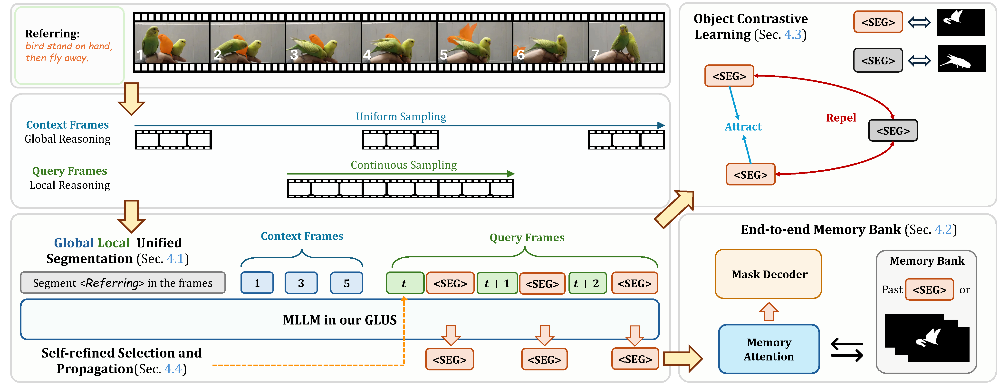

GLUS: Global-Local Reasoning Unified into A Single Large Language Model for Video Segmentation
- Lang Lin 1*
- Xueyang Yu 2*
- Ziqi Pang 3*
- Yu-Xiong Wang 3
* Equal Contribution
TL;DR
We propose GLUS, unify the distinct challenges of Referring Video Object Segmentation, "ref" and "vos", into a simple framework for MLLMs.

Abstract
This paper proposes a novel framework utilizing multi-modal large language models (MLLMs) for referring video object segmentation (RefVOS). Previous MLLM-based methods commonly struggle with the dilemma between 'Ref' and 'VOS': they either specialize in understanding a few key frames (global reasoning) or tracking objects on continuous frames (local reasoning), and rely on external VOS or frame selectors to mitigate the other end of the challenge. However, our framework GLUS shows that Global and Local consistency can be Unified into a single video Segmentation MLLM: a set of sparse 'context frames' provides global information, while a stream of continuous 'query frames' conducts local object tracking. This is further supported by jointly training the MLLM with a pre-trained VOS memory bank to simultaneously digest short-range and long-range temporal information. To improve the information efficiency within the limited context window of MLLMs, we introduce object contrastive learning to distinguish hard false-positive objects and a self-refined framework to identify crucial frames and perform propagation. By collectively integrating these insights, our GLUS delivers a simple yet effective baseline, achieving new state-of-the-art for MLLMs on the MeViS and Ref-Youtube-VOS benchmark.
GLUS: Global-Local Unified Reasoning Framework for MLLMs

Quantiative Results
Our GLUS trained with only RefVOS datasets realizes competitive performance among MLLM-based approaches with datasets from diverse tasks. With expanded training datasets (ED), our GLUS achieves state-of-the-art performance across RefVOS benchmarks, especially in MeViS consisting of complex video scenarios.
| Method | MeViS | Ref-Youtube-VOS | ||||
|---|---|---|---|---|---|---|
| J&F | J | F | J&F | J | F | |
| Methods without LLMs | ||||||
| URVOS | 27.8 | 25.7 | 29.9 | 47.2 | 45.2 | 49.1 |
| LBDT | 29.3 | 27.8 | 30.8 | 54.2 | 52.5 | 55.9 |
| MTTR | 30.0 | 28.8 | 31.2 | 58.4 | 56.0 | 60.8 |
| ReferFormer | 34.5 | 32.9 | 36.2 | 64.1 | 61.2 | 67.0 |
| SOC | - | - | - | 56.8 | 54.2 | 59.3 |
| TempCD | - | - | - | 57.4 | 55.0 | 59.9 |
| LoSh | - | - | - | 65.0 | 62.3 | 67.7 |
| LMPM | 37.2 | 34.2 | 40.2 | 62.1 | 59.0 | 65.3 |
| DsHmp | 46.4 | 43.0 | 49.8 | 67.1 | 65.0 | 69.1 |
| Methods with LLMs | ||||||
| LISA-7B | 37.2 | 35.1 | 39.4 | 53.9 | 52.4 | 54.8 |
| LISA-13B | 40.0 | 37.9 | 42.1 | 55.4 | 54.1 | 56.7 |
| TrackGPT-7B | 45.5 | 43.2 | 47.8 | 61.1 | 59.5 | 62.7 |
| TrackGPT-13B | 46.1 | 43.8 | 48.4 | 62.4 | 60.8 | 64.0 |
| VideoGLAMM | 46.5 | 43.9 | 49.2 | 62.7 | 60.8 | 64.6 |
| VideoLISA-3.8B | 47.2 | 44.8 | 49.6 | 63.0 | 61.3 | 64.7 |
| VISA-7B | 48.5 | 46.1 | 50.9 | 63.5 | 61.6 | 65.4 |
| VISA-13B | 49.0 | 46.8 | 51.2 | 65.0 | 63.3 | 66.7 |
| ViLLa | 50.3 | 48.0 | 52.6 | 66.7 | 64.5 | 68.8 |
| GLUS (ours) | 50.3 | 47.5 | 53.2 | 66.5 | 64.2 | 68.7 |
| GLUS (ours) (ED) | 51.3 | 48.5 | 54.2 | 67.3 | 65.5 | 69.0 |